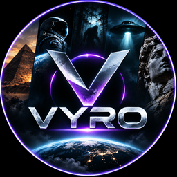

VYRO
Ein privates Desktop-Werkzeug, mit dem der Betreiber eigene, KI-gestützt erstellte Erklär- und Geschichtenvideos produziert und auf seinem eigenen TikTok-Konto veröffentlicht.
Was das Werkzeug tut
- Recherchiert Themen für wahre, belegte Geschichten und prüft Fakten anhand von Wikipedia.
- Erstellt daraus Skript, Sprachaufnahme, Animation, Musik und Untertitel und rendert ein MP4-Video.
- Lädt fertige Videos über die offizielle TikTok Content Posting API als Entwurf in das TikTok-Postfach des verbundenen Kontos oder veröffentlicht sie nach ausdrücklicher Freigabe.
- Ruft über die offiziellen TikTok-Schnittstellen Kennzahlen der eigenen Videos ab (Aufrufe, Likes, Kommentare, Shares, Follower), um künftige Videos zu verbessern.
Wer es nutzt
Das Werkzeug läuft ausschließlich lokal auf dem PC des Betreibers und wird nur für dessen eigenes TikTok-Konto verwendet. Es gibt keine öffentliche Registrierung und keine Nutzerkonten Dritter.
Alle KI-erstellten Videos werden auf TikTok als KI-generierte Inhalte gekennzeichnet.